Stereo-seq Mouse Testis: Segmented Cells
Source:vignettes/stereoseq_testis_cells_giottodisk.Rmd
stereoseq_testis_cells_giottodisk.Rmd1 Overview
This tutorial starts from the cells that STOmics’ SAW pipeline segmented on a Stereo-seq section of mouse testis. It reads them into an on-disk GiottoDisk project, clusters them, and names the clusters with a cluster tree, following Cell typing with a cluster tree.
On a disk-backed object the expression matrix and the cell polygons live as parquet files in a project directory, so the same Giotto commands run on data larger than memory. Two related tutorials start from the 10 µm bins and from the 0.5 µm bins and your own polygons.
2 Install extra packages
This tutorial uses GiottoDisk for on-disk processing. These are preview dev builds off the dev and gsource Giotto package branches. If GiottoDisk has not been installed yet, use the following:
# GiottoDisk install; also installs arrow (with zstd support) and tilework
remotes::install_github("giotto-suite/GiottoUtils", ref = "dev")
GiottoUtils::suite_install("GiottoDisk", install_arrow = TRUE)
# Optional for matrix maths speedup:
install.packages("GiottoKernels",
repos = c("https://giotto-suite.r-universe.dev", "https://cloud.r-project.org")
)3 Dataset explanation
STOmics’ mouse testis demo dataset (chip B04652F6): a fresh frozen section of mouse testis on the Stereo-seq Transcriptomics T FF V1.3 kit, stained with DAPI and processed with SAW. Stereo-seq captures transcripts on spots 0.5 µm apart; SAW sums them into square bins of 1 to 200 spots and, separately, into cells.
SAW segments the nuclei in the DAPI image and assigns the spots to
cells. B04652F6.cellbin.gef holds that segmentation, and
B04652F6.adjusted.cellbin.gef the result of SAW’s cell
correction, which refines which spots belong to each cell: it assigns 93
million of the counts to cells, against 50 million in the segmentation
alone. This tutorial uses the adjusted cells, the default of the Giotto
readers.
3.1 Download links
curl links from STOmics
base=https://demo.stomicsdb.tech/B04652F6_Mouse_Testis_Stereo-seq_FF_V1.3_mIF/outs
mkdir B04652F6 && cd B04652F6
curl -O ${base}/B04652F6.adjusted.cellbin.gef # 1.2 GB
curl -O ${base}/B04652F6_DAPI_regist.tif # 140 MBThe Giotto Stereo-seq readers take this folder as downloaded, with
the files side by side, as well as a SAW outs/ directory
with feature_expression/ and image/
subdirectories.
4 Setup
library(arrow) # this must be libraried before terra or GiottoClass
library(Giotto)
library(GiottoDisk)
data_dir <- "path/to/B04652F6"
project_dir <- "path/to/stereoseq_testis_cells_project"
# set an appropriate amount of parallel workers for your computer
future::plan(future::multisession, workers = 4)5 Read the data
sourceCreate() sets up a gDirSource: a
managed project directory that holds the object on disk.
setArtifactDumpDir() points the expression and spatial
writes at it.
# declare a Giotto directory backend to use
gdsrc <- GiottoDisk::sourceCreate(project_dir, type = "gDirSource")
# point data content writes to the backend's artifact subdirectory
GiottoDisk::setArtifactDumpDir(gdsrc)createGiottoStereoSeqObjectCell() reads the adjusted
cellbin GEF: the cell by gene counts, the cell centers and outlines, and
the registered DAPI image. Passing the backend to backend
creates the object as a disk-backed project.
g <- createGiottoStereoSeqObjectCell(data_dir,
gef_type = "adjusted_cellbin",
backend = gdsrc # creates the object as a backed project
)
gAn object of class giotto
>Active spat_unit: cell
>Active feat_type: rna
dimensions : 27295, 198248 (features, cells)
[SUBCELLULAR INFO]
polygons : cell
[AGGREGATE INFO]
expression -----------------------
[cell][rna] raw
spatial locations ----------------
[cell] raw
attached images ------------------
images : image
Use objHistory() to see steps and params usedThe expression matrix and the polygons are disk stores:
class(getExpression(g, output = "exprObj")[])
class(getPolygonInfo(g, "cell", return_giottoPolygon = TRUE)[])[1] "parquetExprStore"
attr(,"package")
[1] "GiottoDisk"
[1] "parquetGeomStore"
attr(,"package")
[1] "GiottoDisk"The cell outlines over the DAPI image:
sl <- getSpatialLocations(g, output = "data.table")
roi_x <- stats::median(sl$sdimx)
roi_y <- stats::median(sl$sdimy)
half <- 600 # spots; 0.3 mm at 0.5 um per spot
spatInSituPlotPoints(g,
show_image = TRUE,
feats = NULL,
show_polygon = TRUE,
polygon_feat_type = "cell",
polygon_color = "yellow",
polygon_alpha = 0,
polygon_line_size = 0.2,
xlim = c(roi_x - half, roi_x + half),
ylim = c(roi_y - half, roi_y + half)
)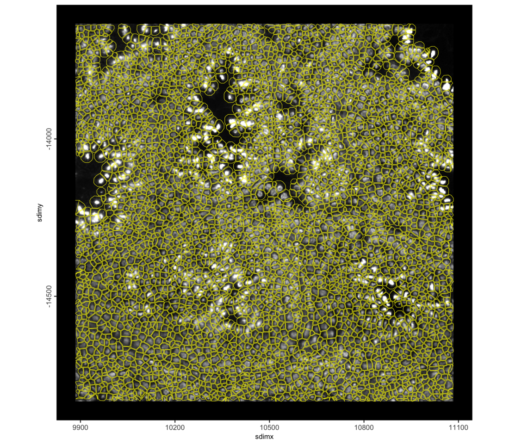
5.1 Save
Backed Giotto projects write named snapshots of the analysis state to the project directory, which can be treated as checkpoints.
# The return value is needed since saveGiotto makes changes during the write
g <- saveGiotto(g, name = "ingest") backend : `gDirSource`
path : path/to/stereoseq_testis_cells_project6 Quality control and filtering
g <- addStatistics(g, expression_values = "raw")
cx <- pDataDT(g)
cat(sprintf("%s cells | median %d counts, %d features per cell\n",
format(nrow(cx), big.mark = ","),
median(cx$total_expr), median(cx$nr_feats))
)198,248 cells | median 410 counts, 349 features per cell
g <- filterGiotto(g,
expression_threshold = 1,
feat_det_in_min_cells = 10,
min_det_feats_per_cell = 50,
verbose = FALSE
)
cat(sprintf("%s cells x %s features retained\n",
format(length(spatIDs(g)), big.mark = ","),
format(nrow(fDataDT(g)), big.mark = ","))
)197,292 cells x 23,245 features retained7 Normalize and select features
g <- normalizeGiotto(g,
scalefactor = 1e4,
logbase = exp(1),
log_offset = 1,
scale_feats = FALSE,
scale_cells = FALSE,
verbose = FALSE
)
g <- calculateHVF(g,
method = "var_p_resid",
n_top_feats = 2000,
verbose = FALSE
)The highly variable features are chosen by Pearson residuals
(method = "var_p_resid"). Most cells in the testis are germ
cells, and the genes that mark their stages, such as the protamines, are
detected in many cells. A selection by coefficient of variation favors
genes detected in few cells instead, and with about 400 counts per cell
those give components that pick out small groups of cells by a single
gene.
8 Dimension reduction
g <- runPCA(g,
feats_to_use = "hvf",
ncp = 50,
scale_unit = TRUE,
center = TRUE,
verbose = FALSE
)
screePlot(g, ncp = 50)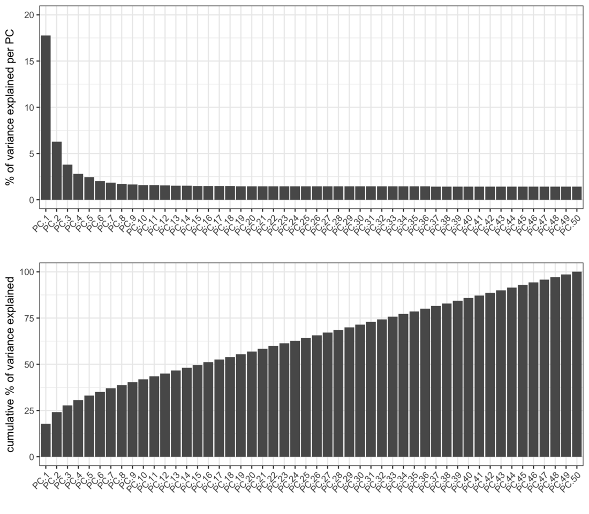
The scree plot flattens after about 10 PCs, so those are used below.
9 Clustering
The kNN network is built first. runUMAP() then reuses it
instead of searching for neighbors again, and Leiden clusters on the
same network. The resolution is set on the high side: the cluster tree
below groups the clusters again, so it is better to split too much than
too little.
dims_to_use <- 1:10
g <- createNearestNetwork(g,
type = "kNN",
dimensions_to_use = dims_to_use,
k = 30,
engine = "hnsw",
verbose = FALSE
)
g <- runUMAP(g,
dimensions_to_use = dims_to_use,
n_neighbors = 30,
min_dist = 0.3,
verbose = FALSE
)
g <- doLeidenCluster(g,
nn_network_to_use = "kNN",
network_name = "kNN.pca",
resolution = 1,
n_iterations = 20,
objective_function = "modularity",
verbose = FALSE
)
table(pDataDT(g)$leiden_clus)
clusters <- GiottoUtils::mixedsort(unique(as.character(pDataDT(g)$leiden_clus)))
# one color per cluster, shared by the plots below
clus_colors <- stats::setNames(getDistinctColors(length(clusters)), clusters)
g <- saveGiotto(g, name = "clustered")
1 2 3 4 5 6 7 8 9 10 11 12 13
10965 17435 28142 11918 15861 14154 11832 15358 9184 7610 4734 7900 3866
14 15 16 17 18 19
3726 11281 2705 10930 9130 561
backend : `gDirSource`
path : path/to/stereoseq_testis_cells_project
plotUMAP(g,
cell_color = "leiden_clus",
color_as_factor = TRUE,
cell_color_code = clus_colors,
point_border_stroke = 0,
point_size = 0.1
)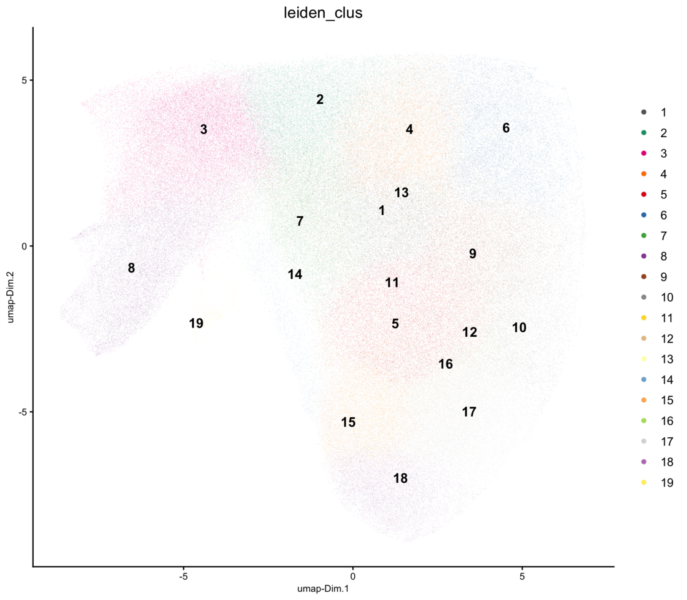
spatPlot2D(g,
cell_color = "leiden_clus",
color_as_factor = TRUE,
cell_color_code = clus_colors,
point_border_stroke = 0,
point_size = 0.3,
background_color = "black"
)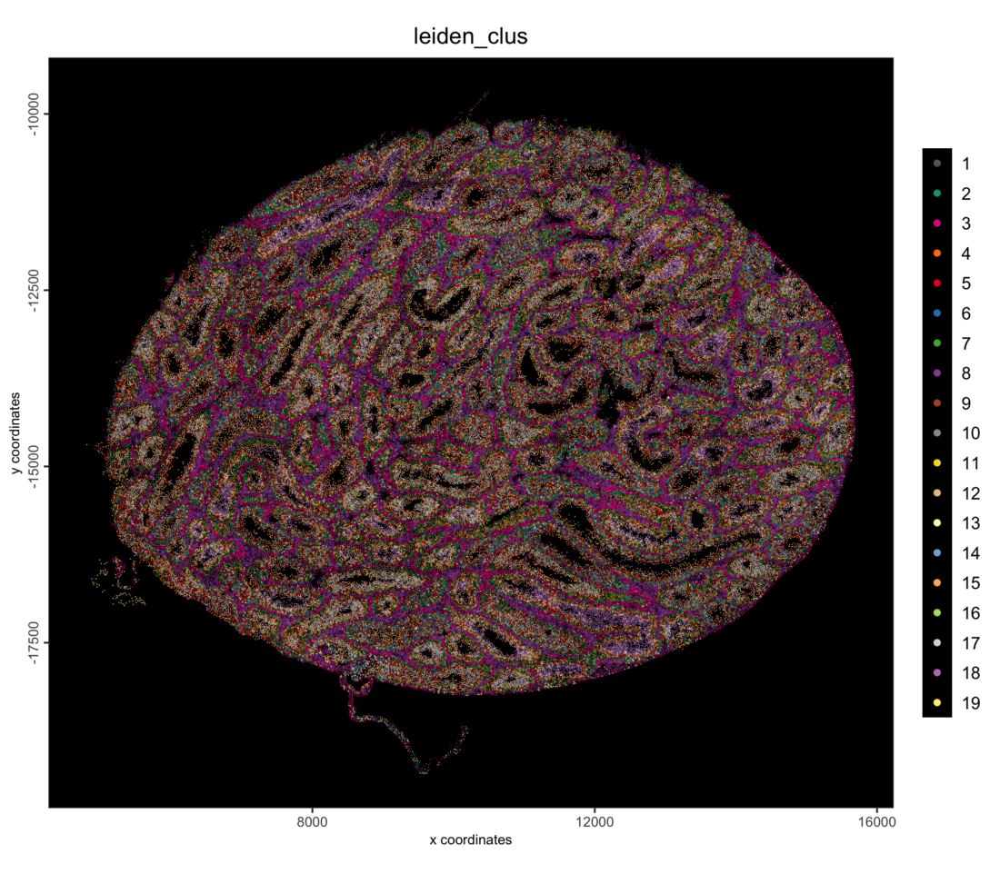
10 Cell typing with a cluster tree
The steps below follow Cell typing with a cluster tree, which explains each of them in more detail.
10.1 Build the cluster tree
CLUS <- "leiden_clus"
hvf <- fDataDT(g)[hvf == "yes"]$feat_ID
tree <- calculateClusterTree(g,
cluster_column = CLUS,
feats = hvf,
cor = "pearson",
distance = "average"
)
plot(tree, hang = -1)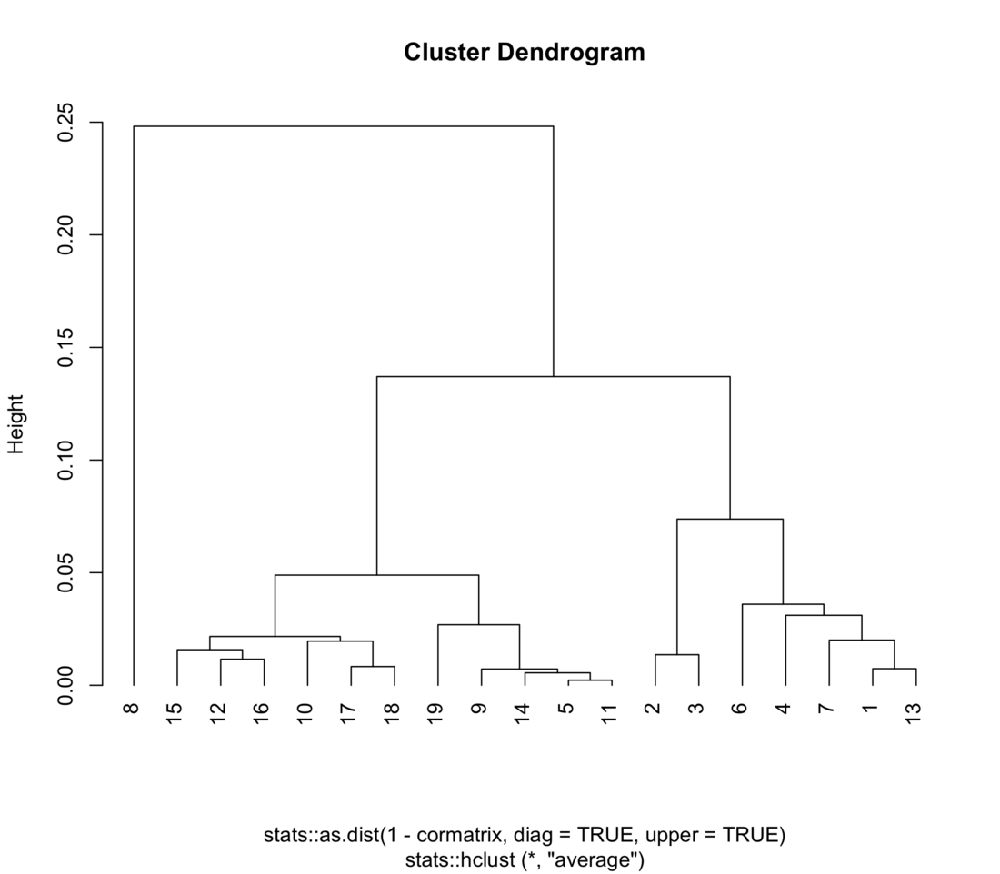
10.2 Markers
mk <- findMarkers_one_vs_all(g,
method = "scran",
cluster_column = CLUS,
min_feats = 10,
verbose = FALSE
)
gi <- findGiniMarkers_one_vs_all(g,
cluster_column = CLUS,
min_feats = 10,
verbose = FALSE
)
nm <- findClusterTreeMarkers(g,
cluster_column = CLUS,
tree = tree,
method = "scran",
verbose = FALSE
)10.3 Assemble the annotation prompt
writeClusterTreeQuery() writes the tree, the per-cluster
markers and the markers of each split into one prompt for a language
model, together with a description of the sample.
prompt_file <- file.path(tempdir(), "stereoseq_testis_celltyping_prompt.txt")
q <- writeClusterTreeQuery(g,
cluster_column = CLUS,
tree = tree,
markers = mk,
gini_markers = gi,
node_markers = nm,
context = list(
tissue = "mouse testis",
assay = "Stereo-seq whole-transcriptome, fresh frozen section, SAW cell segmentation on DAPI"
),
file_name = prompt_file
)
cat(length(q), "lines\n")323 lines10.4 Apply the annotation
The model answers with a label for each cluster and for each node of
the tree, saved here as testis_cell_types.json. Check the
answer against the markers above, and against where each cluster sits in
the tissue, before using it.
The tree is shallow: every cluster correlates with every other above 0.75, and most splits are below 0.05. Each tubule holds germ cells at several stages, and segmented cells pick up counts from their neighbors, so the spermatid genes are detected nearly everywhere. The clusters still follow the layers of the tubules, from the basal compartment at the rim through spermatocytes and round spermatids to elongating spermatids in the lumen, and the cell types between the tubules.
testis_cell_types.json
{
"nodes": [
{
"node": 18,
"short": "all cells",
"label": "all cells"
},
{
"node": 17,
"short": "seminiferous tubules",
"label": "cells of the seminiferous tubules"
},
{
"node": 16,
"short": "early germ cells and Sertoli",
"label": "Sertoli cells, spermatogonia, spermatocytes and round spermatids"
},
{
"node": 7,
"short": "basal compartment",
"label": "basal compartment of the tubules"
},
{
"node": 14,
"short": "meiotic and round spermatid layers",
"label": "spermatocytes and round spermatids"
},
{
"node": 13,
"short": "spermatocytes",
"label": "spermatocytes"
},
{
"node": 10,
"short": "pachytene and late spermatocytes",
"label": "pachytene and late spermatocytes"
},
{
"node": 4,
"short": "late spermatocytes, peritubular-mixed",
"label": "late spermatocytes and peritubular cells"
},
{
"node": 15,
"short": "spermatids and scattered cells",
"label": "elongating spermatids and scattered interstitial cells"
},
{
"node": 11,
"short": "elongating spermatids",
"label": "elongating and elongated spermatids"
},
{
"node": 8,
"short": "elongated spermatids",
"label": "elongated spermatids"
},
{
"node": 6,
"short": "Tnp-high spermatids",
"label": "Tnp-high elongating spermatids"
},
{
"node": 9,
"short": "condensing spermatids",
"label": "condensing spermatids"
},
{
"node": 5,
"short": "Prm-high spermatids",
"label": "Prm-high elongated spermatids"
},
{
"node": 12,
"short": "spermatids with interstitial cells",
"label": "spermatids mixed with interstitial cells"
},
{
"node": 3,
"short": "spermatids, vascular and immune",
"label": "spermatids with vascular and immune cells"
},
{
"node": 2,
"short": "spermatids, endothelium, macrophages",
"label": "spermatids, endothelial cells and macrophages"
},
{
"node": 1,
"short": "spermatids and macrophages",
"label": "spermatids and macrophages"
}
],
"clusters": [
{
"cluster": "1",
"cell_type": "late spermatocytes (Tuba3a/b+)",
"confidence": "medium",
"markers": [
"Tuba3a",
"Tuba3b",
"Rsph1",
"Ldhc",
"Meig1"
],
"merge_with": null
},
{
"cluster": "2",
"cell_type": "early spermatocytes (Tex101+)",
"confidence": "low",
"markers": [
"Tex101",
"Clu",
"Hspa5",
"Clgn",
"Ldhc"
],
"merge_with": "3"
},
{
"cluster": "3",
"cell_type": "basal compartment: Sertoli cells and spermatogonia",
"confidence": "medium",
"markers": [
"Clu",
"Cst12",
"Sparc",
"Ctsl",
"Defb19"
],
"merge_with": null
},
{
"cluster": "4",
"cell_type": "spermatocytes",
"confidence": "low",
"markers": [
"Tuba3a",
"Tuba3b",
"Piwil1",
"Nasp"
],
"merge_with": "7"
},
{
"cluster": "5",
"cell_type": "elongating spermatids (Odf2+, Ropn1l+)",
"confidence": "low",
"markers": [
"Prm2",
"Tnp1",
"Odf2",
"Ropn1l",
"Gsg1"
],
"merge_with": null
},
{
"cluster": "6",
"cell_type": "round spermatids (Lyzl1+, Spaca1+)",
"confidence": "medium",
"markers": [
"Lyzl1",
"Lyzl6",
"Spaca1",
"Spaca7",
"Pdilt"
],
"merge_with": null
},
{
"cluster": "7",
"cell_type": "pachytene spermatocytes (Piwil1+)",
"confidence": "high",
"markers": [
"Piwil1",
"Tuba3b",
"Slc2a3",
"Nasp"
],
"merge_with": null
},
{
"cluster": "8",
"cell_type": "Leydig cells",
"confidence": "high",
"markers": [
"Cyp11a1",
"Cyp17a1",
"Fabp3",
"Akr1cl",
"Jak3"
],
"merge_with": null
},
{
"cluster": "9",
"cell_type": "round spermatids (Actl7b+, Spaca7+)",
"confidence": "medium",
"markers": [
"Fam209",
"Actl7b",
"Spaca1",
"Spaca7",
"Dusp13"
],
"merge_with": null
},
{
"cluster": "10",
"cell_type": "early elongating spermatids (Tnp1+)",
"confidence": "medium",
"markers": [
"Tnp1",
"Tnp2",
"Fam209",
"Actl7b",
"Sh3d21"
],
"merge_with": null
},
{
"cluster": "11",
"cell_type": "macrophages, spermatid-mixed",
"confidence": "low",
"markers": [
"F13a1",
"Lyz2",
"C1qa",
"Csf1r",
"Apoe"
],
"merge_with": null
},
{
"cluster": "12",
"cell_type": "elongating spermatids (Tnp+, Grip1+)",
"confidence": "low",
"markers": [
"Tnp1",
"Tnp2",
"Sh3d21",
"Grip1",
"Ctnna2"
],
"merge_with": "16"
},
{
"cluster": "13",
"cell_type": "peritubular myoid cells and fibroblasts, spermatocyte-mixed",
"confidence": "low",
"markers": [
"Col1a1",
"Col1a2",
"C3",
"Ctgf"
],
"merge_with": null
},
{
"cluster": "14",
"cell_type": "endothelial cells, spermatid-mixed",
"confidence": "low",
"markers": [
"Cldn5",
"Ptprb",
"Cd93",
"Eng",
"Rgs5"
],
"merge_with": null
},
{
"cluster": "15",
"cell_type": "elongated spermatids (Prm+, Smcp+)",
"confidence": "medium",
"markers": [
"Prm1",
"Prm2",
"Smcp",
"Oaz3",
"Gsg1"
],
"merge_with": null
},
{
"cluster": "16",
"cell_type": "spermatids, scattered",
"confidence": "low",
"markers": [
"Tnp1",
"Prm2",
"Prm1",
"Tnp2"
],
"merge_with": "12"
},
{
"cluster": "17",
"cell_type": "elongating spermatids (Prm+, Tnp+)",
"confidence": "medium",
"markers": [
"Prm2",
"Tnp1",
"Prm1",
"Tnp2",
"Smcp"
],
"merge_with": null
},
{
"cluster": "18",
"cell_type": "late elongated spermatids (Spz1+, Dnajb3+)",
"confidence": "medium",
"markers": [
"Prm1",
"Spz1",
"Dnajb3",
"Eif1"
],
"merge_with": null
},
{
"cluster": "19",
"cell_type": "adipocytes",
"confidence": "high",
"markers": [
"Fabp4",
"Cfd",
"Lpl",
"Car3",
"Plin4"
],
"merge_with": null
}
]
}annotateClusterTree() turns the tree into cell type
columns at several levels of detail: k is the number of
groups at each level. Annotating the tree at 5, 10 and 15 groups shows
how the broad compartments split into cell types and stages further down
the tree.
ans <- jsonlite::fromJSON(labels_json, simplifyVector = FALSE)
labels <- list(
clusters = stats::setNames(
vapply(ans$clusters, function(x) x$cell_type, ""),
vapply(ans$clusters, function(x) as.character(x$cluster), "")
),
nodes = stats::setNames(
vapply(ans$nodes, function(x) x$short, ""),
vapply(ans$nodes, function(x) as.character(x$node), "")
)
)
lvls <- GiottoUtils::mixedsort(unique(as.character(pDataDT(g)[[CLUS]])))
g <- annotateClusterTree(g,
tree = tree,
labels = labels,
cluster_column = CLUS,
k = c(5, 10, 15, length(lvls))
)
table(g$cell_types_k5)
basal compartment elongating spermatids
45577 49556
Leydig cells meiotic and round spermatid layers
15358 52735
spermatids with interstitial cells
34066
GiottoVisuals::plotClusterTree(g,
cluster_column = CLUS,
tree = tree,
labels = labels,
k = c(5, 10, 15),
gini_markers = gi,
node_labels = FALSE
)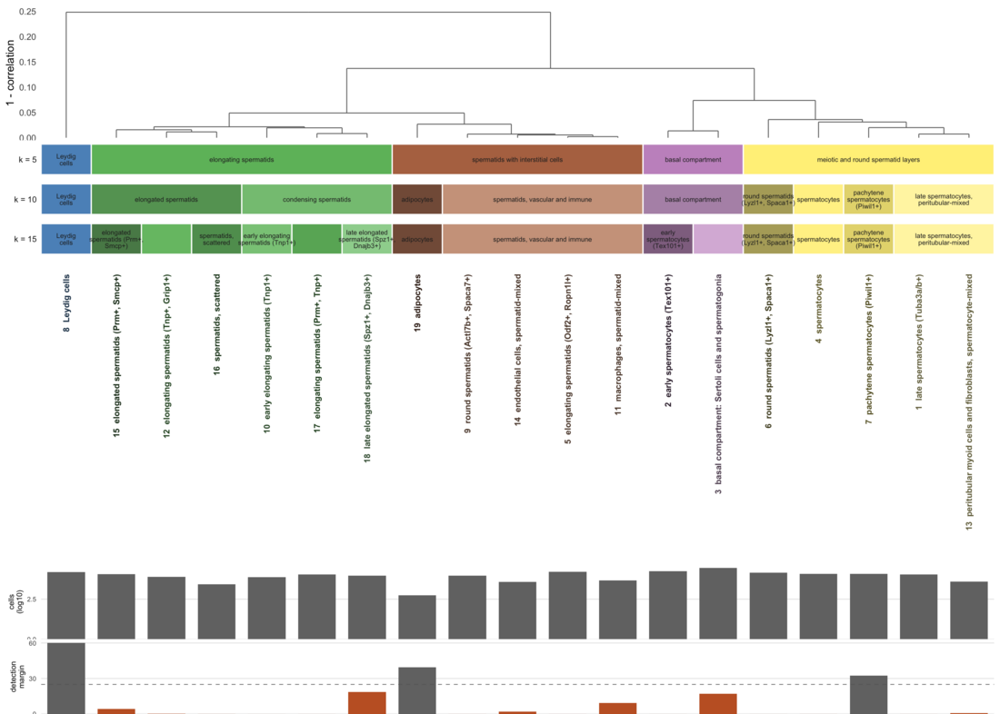
k sets the number of groups. The tree can also be cut by
how different the clusters are: with h, clusters that are
more than that fraction dissimilar (1 - correlation, averaged between
the two groups) stay apart. On this tree a cut at 1%, 2.5% and 5% gives
14, 8 and 4 groups:
g <- annotateClusterTree(g,
tree = tree,
labels = labels,
cluster_column = CLUS,
h = c(0.01, 0.025, 0.05)
)
GiottoVisuals::plotClusterTree(g,
cluster_column = CLUS,
tree = tree,
labels = labels,
h = c(0.01, 0.025, 0.05),
gini_markers = gi,
node_labels = FALSE
)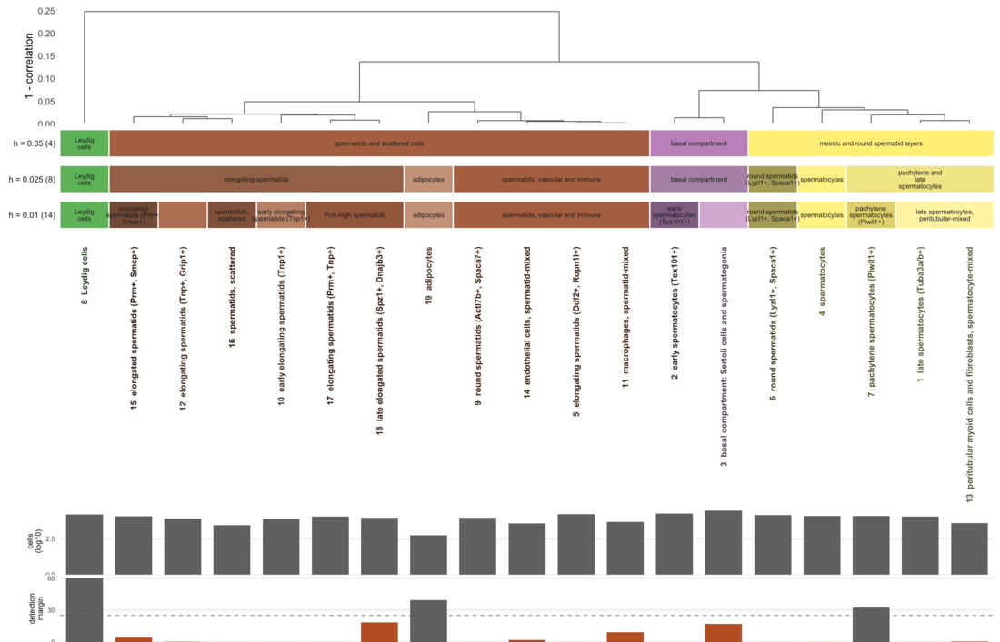
11 Results
k5_types <- sort(unique(g$cell_types_k5))
k5_colors <- stats::setNames(getDistinctColors(length(k5_types)), k5_types)
spatPlot2D(g,
color_as_factor = TRUE,
cell_color = "cell_types_k5",
cell_color_code = k5_colors,
point_border_stroke = 0,
point_size = 0.3,
background_color = "black",
theme_param = list(legend.position = "right")
)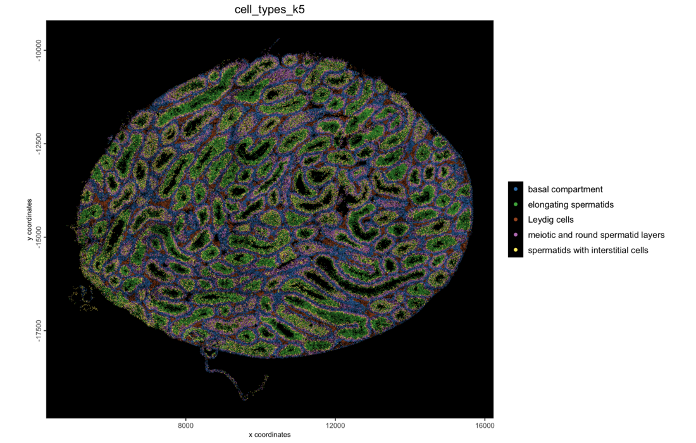
One color per type, reused in the zoom below:
k15_types <- sort(unique(g$cell_types_k15))
k15_colors <- stats::setNames(getDistinctColors(length(k15_types)), k15_types)
spatPlot2D(g,
color_as_factor = TRUE,
cell_color = "cell_types_k15",
cell_color_code = k15_colors,
point_border_stroke = 0,
point_size = 0.3,
background_color = "black",
theme_param = list(legend.position = "right")
)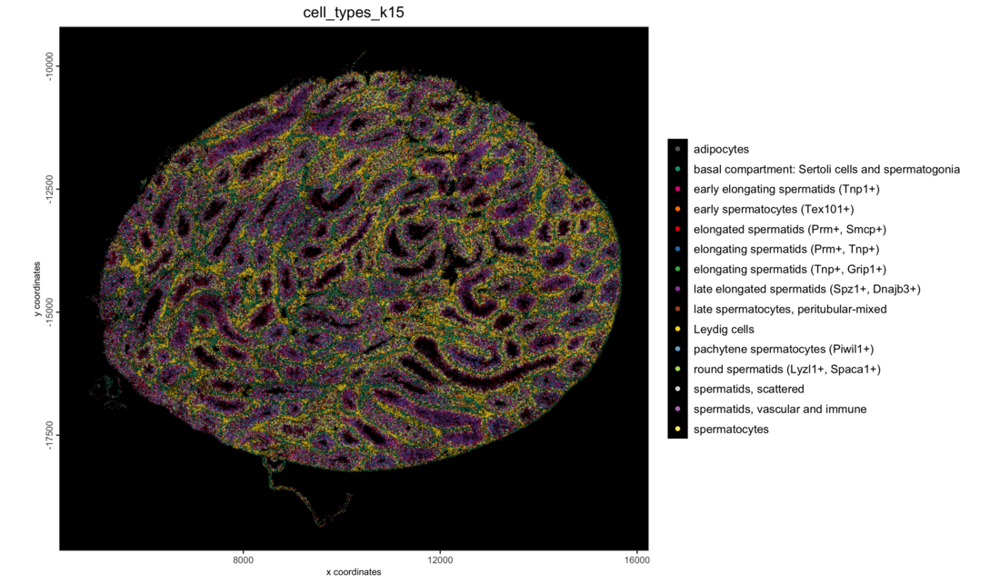
Zoom into a region with the cell polygons, filled by cell type, over the DAPI image:
spatInSituPlotPoints(g,
show_image = TRUE,
feats = NULL,
show_polygon = TRUE,
polygon_feat_type = "cell",
polygon_fill = "cell_types_k15",
polygon_fill_as_factor = TRUE,
polygon_fill_code = k15_colors,
polygon_line_size = 0.1,
polygon_alpha = 0.7,
xlim = c(roi_x - half, roi_x + half),
ylim = c(roi_y - half, roi_y + half)
)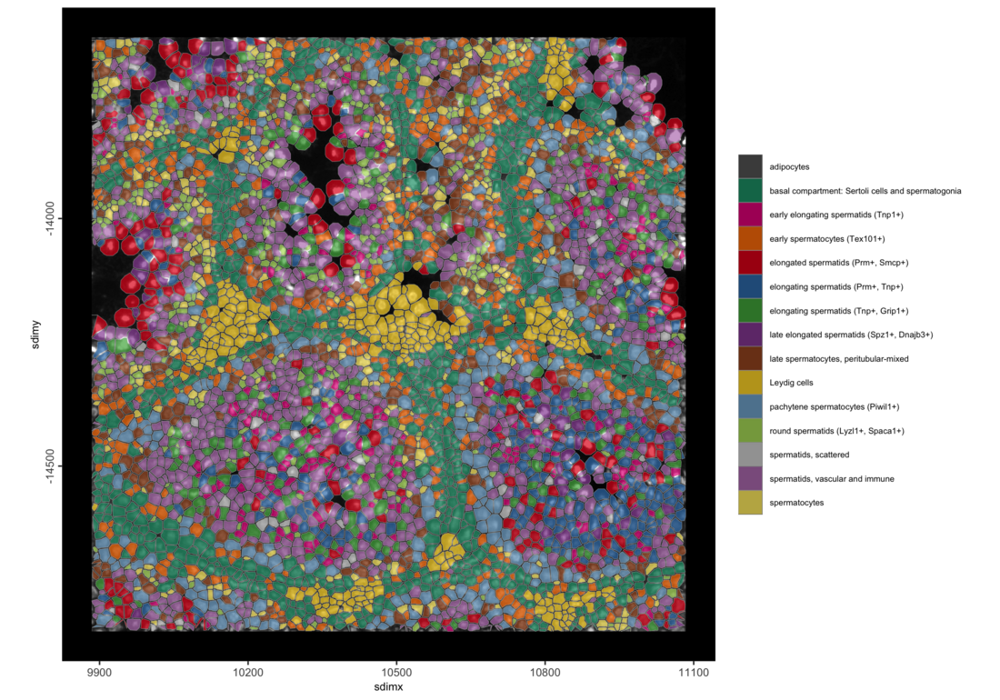
The same region, with the cells filled by the normalized expression of marker genes from the outside of a tubule to its lumen: Leydig cells (Cyp17a1), the basal compartment (Clu), spermatocytes (Piwil1), round spermatids (Spaca1), and elongating spermatids (Tnp1, Prm1):
marker_genes <- c("Cyp17a1", "Clu", "Piwil1", "Spaca1", "Tnp1", "Prm1")
for (gene in marker_genes) {
print(spatInSituPlotPoints(g,
show_image = TRUE,
feats = NULL,
show_polygon = TRUE,
polygon_feat_type = "cell",
polygon_fill = gene,
expression_values = "normalized",
polygon_fill_as_factor = FALSE,
polygon_fill_gradient_style = "sequential",
polygon_line_size = 0.1,
polygon_alpha = 0.8,
xlim = c(roi_x - half, roi_x + half),
ylim = c(roi_y - half, roi_y + half),
show_plot = FALSE,
return_plot = TRUE
) + ggplot2::ggtitle(gene))
}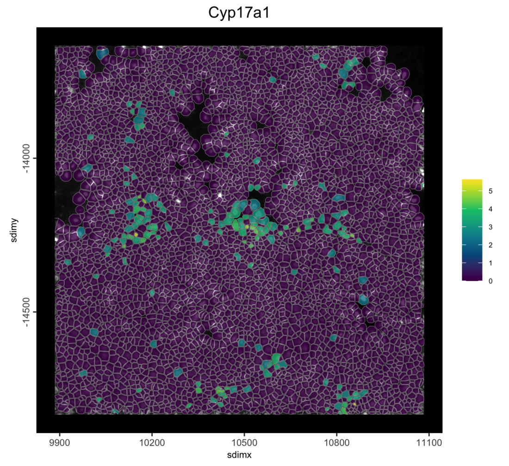
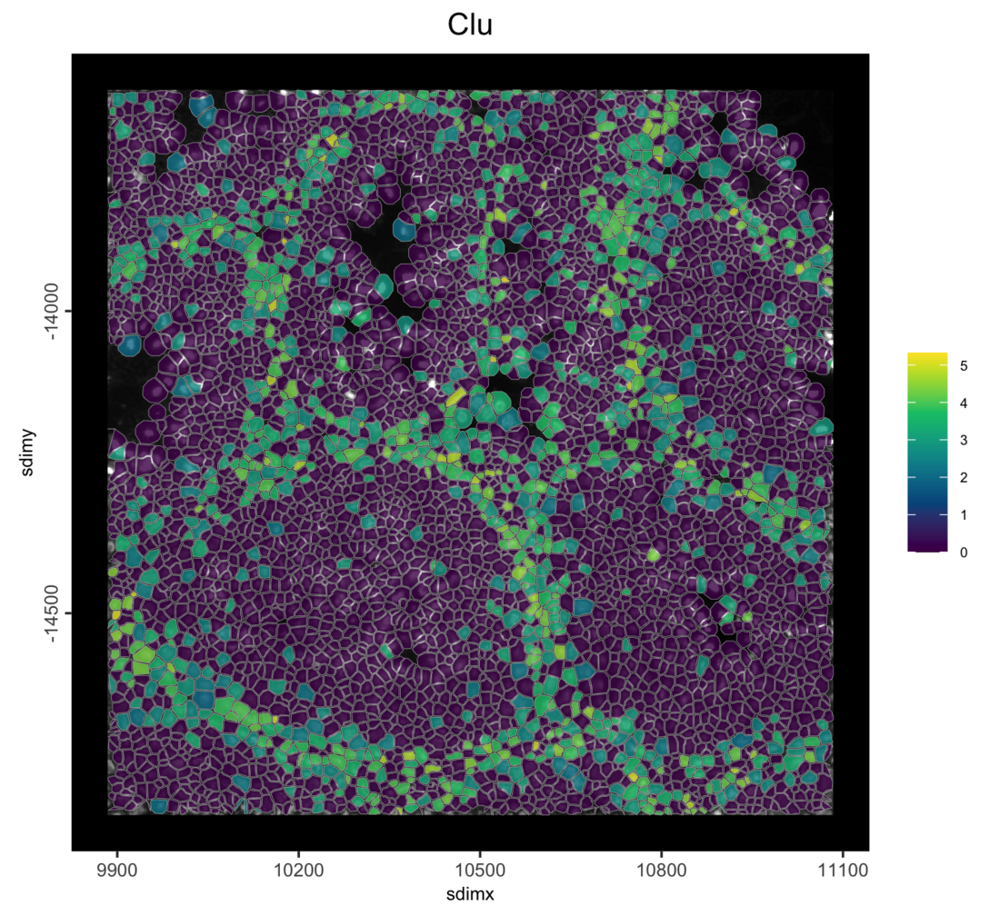
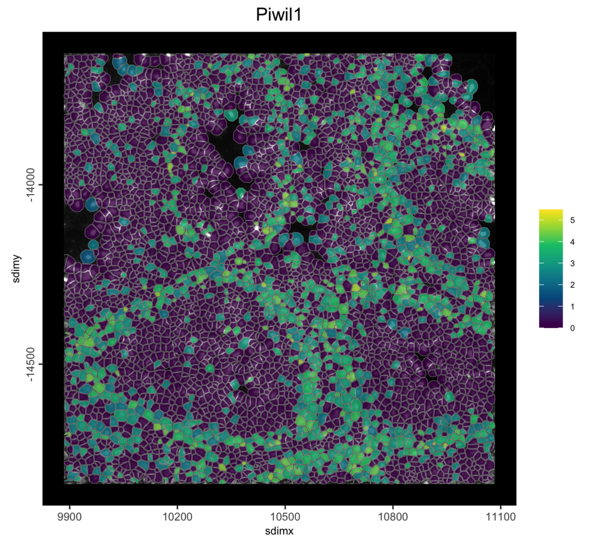
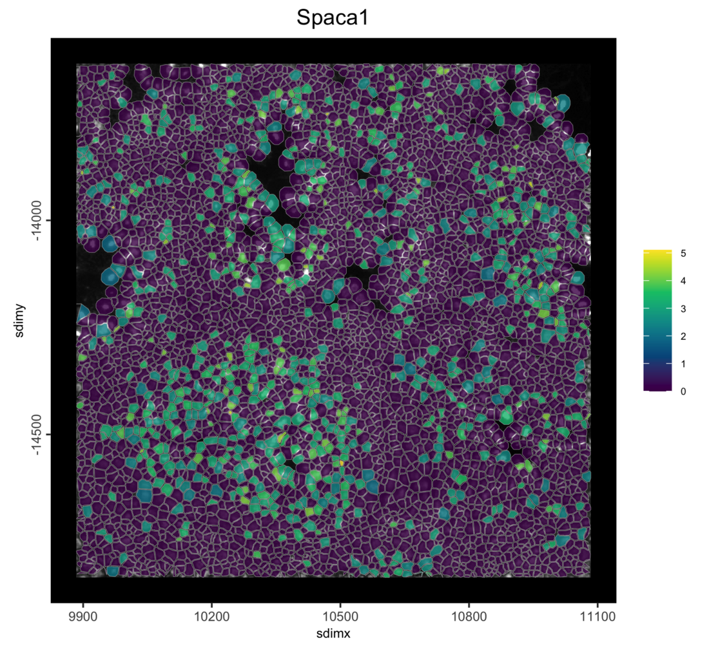
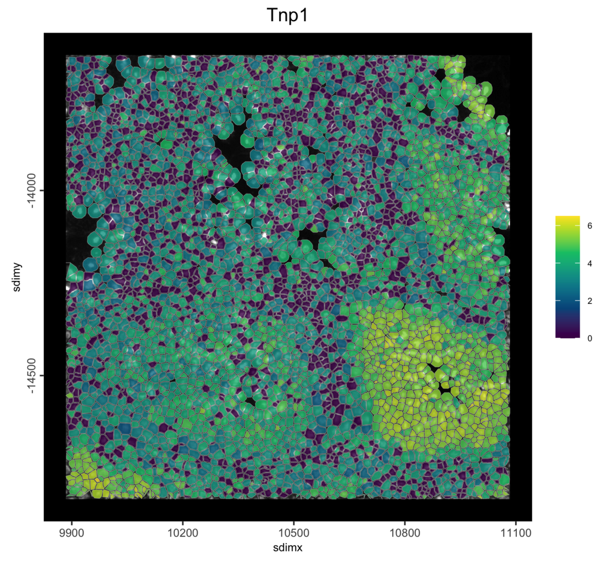
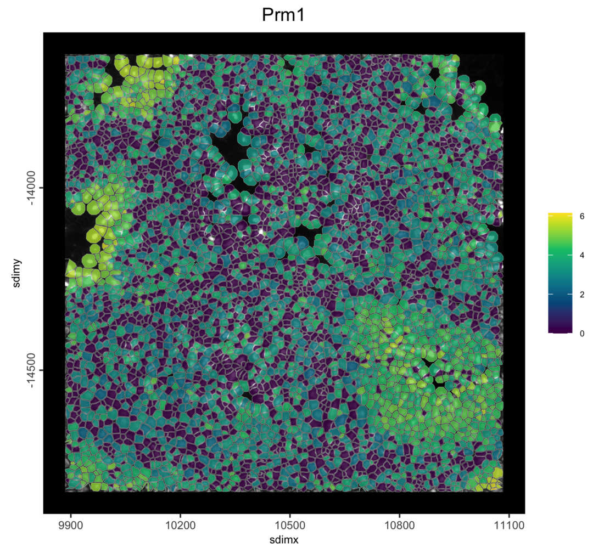
g <- saveGiotto(g, name = "annotated") backend : `gDirSource`
path : path/to/stereoseq_testis_cells_projectThe object is saved to the project directory and can be reloaded with
loadGiotto(project_dir, name = "annotated").
12 Further reading
- Stereo-seq mouse testis: 10 µm bins, with spatially variable genes and co-expression modules
- Stereo-seq mouse testis: 0.5 µm bins into your own polygons
- Stereo-seq Data Import, which covers the readers and the files in a SAW output directory
13 Session info
R version 4.5.3 (2026-03-11)
Platform: aarch64-apple-darwin20
Running under: macOS Tahoe 26.6.2
Matrix products: default
BLAS: /Library/Frameworks/R.framework/Versions/4.5-arm64/Resources/lib/libRblas.0.dylib
LAPACK: /Library/Frameworks/R.framework/Versions/4.5-arm64/Resources/lib/libRlapack.dylib; LAPACK version 3.12.1
locale:
[1] C.UTF-8/C.UTF-8/C.UTF-8/C/C.UTF-8/C.UTF-8
time zone: America/New_York
tzcode source: internal
attached base packages:
[1] stats graphics grDevices utils datasets methods base
other attached packages:
[1] GiottoDisk_0.0.0.6 Giotto_4.3.5 GiottoClass_0.7.18 arrow_23.0.1.2
loaded via a namespace (and not attached):
[1] RColorBrewer_1.1-3 ggdendro_0.2.0
[3] jsonlite_2.0.0 wk_0.9.5
[5] magrittr_2.0.4 magick_2.9.1
[7] farver_2.1.2 rmarkdown_2.31
[9] vctrs_0.7.2 memoise_2.0.1
[11] GiottoUtils_0.2.7 terra_1.9-11
[13] htmltools_0.5.9 S4Arrays_1.10.1
[15] BiocNeighbors_2.4.0 Rhdf5lib_1.32.0
[17] SparseArray_1.10.9 rhdf5_2.54.1
[19] sass_0.4.10 parallelly_1.47.0
[21] bslib_0.10.0 htmlwidgets_1.6.4
[23] plotly_4.12.0 cachem_1.1.0
[25] igraph_2.2.2 lifecycle_1.0.5
[27] pkgconfig_2.0.3 rsvd_1.0.5
[29] Matrix_1.7-5 R6_2.6.1
[31] fastmap_1.2.0 MatrixGenerics_1.22.0
[33] future_1.70.0 digest_0.6.39
[35] colorspace_2.1-2 S4Vectors_0.48.0
[37] dqrng_0.4.1 irlba_2.3.7
[39] GenomicRanges_1.62.1 beachmat_2.26.0
[41] filelock_1.0.3 labeling_0.4.3
[43] progressr_0.18.0 httr_1.4.8
[45] polyclip_1.10-7 abind_1.4-8
[47] compiler_4.5.3 bit64_4.6.0-1
[49] withr_3.0.2 S7_0.2.1
[51] backports_1.5.0 BiocParallel_1.44.0
[53] viridis_0.6.5 DBI_1.3.0
[55] ggforce_0.5.0 R.utils_2.13.0
[57] duckdb_1.5.1 MASS_7.3-65
[59] DelayedArray_0.36.0 rjson_0.2.23
[61] bluster_1.20.0 gtools_3.9.5
[63] GiottoVisuals_0.2.16 tools_4.5.3
[65] otel_0.2.0 future.apply_1.20.2
[67] R.oo_1.27.1 glue_1.8.0
[69] rhdf5filters_1.22.0 grid_4.5.3
[71] checkmate_2.3.4 cluster_2.1.8.2
[73] generics_0.1.4 gtable_0.3.6
[75] R.methodsS3_1.8.2 tidyr_1.3.2
[77] data.table_1.18.2.1 metapod_1.18.0
[79] BiocSingular_1.26.1 tidygraph_1.3.1
[81] ScaledMatrix_1.18.0 XVector_0.50.0
[83] BiocGenerics_0.56.0 tilework_1.0.0
[85] ggrepel_0.9.8 pillar_1.11.1
[87] RcppHNSW_0.6.0 limma_3.66.0
[89] dplyr_1.2.0 tweenr_2.0.3
[91] lattice_0.22-9 bit_4.6.0
[93] tidyselect_1.2.1 locfit_1.5-9.12
[95] SingleCellExperiment_1.32.0 scuttle_1.20.0
[97] knitr_1.51 gridExtra_2.3
[99] IRanges_2.44.0 Seqinfo_1.0.0
[101] edgeR_4.8.2 SummarizedExperiment_1.40.0
[103] scattermore_1.2 stats4_4.5.3
[105] xfun_0.57 graphlayouts_1.2.3
[107] Biobase_2.70.0 statmod_1.5.2
[109] matrixStats_1.5.0 lazyeval_0.2.2
[111] yaml_2.3.12 evaluate_1.0.5
[113] codetools_0.2-20 ggraph_2.2.2
[115] tibble_3.3.1 colorRamp2_0.1.0
[117] cli_3.6.5 uwot_0.2.4
[119] jquerylib_0.1.4 dichromat_2.0-0.1
[121] Rcpp_1.1.1 globals_0.19.1
[123] dbplyr_2.5.2 parallel_4.5.3
[125] ggplot2_4.0.2 assertthat_0.2.1
[127] scran_1.38.1 listenv_0.10.1
[129] SpatialExperiment_1.20.0 viridisLite_0.4.3
[131] scales_1.4.0 purrr_1.2.1
[133] rlang_1.3.0 cowplot_1.2.0NA ```